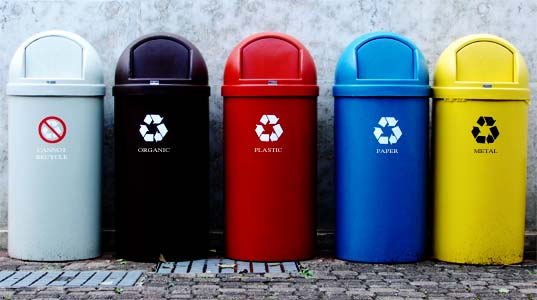

ทางการรีไซเคิลขยะอิเล็กทรอนิกส์

เมื่อทศวรรษ 1990
มีบางประเทศในยุโรปได้ออกกฎหมายห้ามนำขยะอิเล็กทรอนิกส์ไปถมในที่ดิน และก่อให้เกิดอุตสาหกรรมจัดการขยะอิเล็กทรอนิกส์ขึ้นในยุโรป ครั้นเมื่อต้นปี 2003 สหภาพยุโรป หรืออียู ก็ได้เสนอระเบียบ WEEE และ RoHS สำหรับการใช้ควบคุมในปี 2005 และ 2006 บางรัฐในสหรัฐ อเมริกาได้ปรับปรุงนโยบายห้ามใช้จอ CRT ไปถมที่ดิน การจัดการขยะอิเล็กทรอนิกส์บางอย่างดำเนินการในสหรัฐอเมริกา กระบวนการนี้อาจเป็นการรื้อถอดชิ้นส่วนเป็นโลหะ พลาสติก และแผ่นวงจร หรือชำแหละเป็นชิ้นส่วนเล็กๆ น้อยๆ นับตั้งแต่ปี 2004 เป็นต้นมารัฐแคลิฟอร์เนียได้ เริ่มใช้ค่าธรรมเนียมการรีไซเคิลขยะอิเล็กทรอนิกส์กับโทรทัศน์และมอนิเตอร์ใหม่ทุกรุ่นที่จำหน่ายไป เพื่อให้ครอบคลุมต้นทุนการรีไซเคิลด้วย สำหรับอัตราค่าธรรมเนียมนั้นขึ้นอยู่กับขนาดของจอมอนิเตอร์นั่นเอง อัตราดังกล่าวยังมีการปรับปรุงเมื่อวันที่ 1 กรกฎาคม 2005 เพื่อให้สอด คล้องกับต้นทุนการรีไซเคิลที่แท้จริง
โรงงานรีไซเคิลขยะอิเล็กทรอนิกส์โดยทั่วไปที่พบในประเทศอุตสาหกรรมบางประเทศนั้นอาศัยการถอดชิ้นส่วนอุปกรณ์ออกมาก่อน ซึ่งมีกำลังทำงานเพิ่มขึ้นสำหรับขยะอิเล็กทรอนิกส์จำนวนมาก โดยใช้ต้นทุนที่มีประสิทธิภาพ วัสดุที่ถูกป้อนเข้าเครื่องกำจัดขยะ ซึ่งจะผ่านไปตามสายพาน จะถูกส่งไปยังเครื่องคัดแยกเชิงกล และมีเครื่องคัดกรองอีกหลายชั้น เครื่องจักรรีไซเคิลทั้งหมดจะถูกปิดคลุมและใช้ระบบกักฝุ่น ปัจจุบันนี้ สหภาพยุโรป เกาหลีใต้ ญี่ปุ่น รวมทั้งไต้หวัน ต่างก็กำหนดให้ผู้ขายและผู้ผลิตอุปกรณ์อิเล็กทรอนิกส์มีส่วนรับผิดชอบในการรีไซเคิลขยะจาก ผลิตภัณฑ์ของตนถึงร้อยละ 75% ของจำนวนทั้งหมดที่ผลิตหรือขาย
หลายประเทศในเอเชีย ก็เริ่มตื่นตัวในเรื่องการรีไซเคิลขยะอิเล็กทรอนิกส์กันแล้ว บางประเทศได้ออกกฎหมายเกี่ยวกับประเด็นดังกล่าวอย่างชัดเจน ขณะที่บางประเทศก็อยู่ระหว่างการศึกษา เพื่อหาแนวทางแก้ไขอันเป็นมาตรการที่เหมาะสมที่สุด ทั้งในส่วนของการประหยัดและเกิด ประสิทธิภาพสูงสุด หรือเสนอร่างให้แก่สภานิติบัญญัติ ส่วนในสหรัฐอเมริกา สภาคองเกรสอยู่ระหว่างการพิจารณากฎหมายขยะอิเล็กทรอนิกส์ ในจำนวนนี้ มีกฎหมายรีไซเคิลคอมพิวเตอร์แห่งชาติ (National Computer Recycling Act)ที่เสนอโดย วุฒิสมาชิกไมค์ ทอมป์สัน (Mike Thompson) (D-CA) รวมอยู่ด้วย ขณะที่หลายรัฐของเมริกาก็ได้เสนอและผ่านร่างกฎหมายเกี่ยวกับการจัดการขยะอิเล็กทรอนิกส์แล้วเช่นกัน ทั้งนี้ แคลิฟอร์เนียนับเป็นรัฐแรกที่เสนอกฎหมายดังกล่าว ตามมาด้วยรัฐแมรีแลนด์ รัฐเมน รัฐวอชิงตัน และรัฐมินเนสโซตา
เดิมนั้น การใช้ผลผลิตจากอุตสาหกรรมเป็นไปอย่างไม่มีแบบแผน ผลิตภัณฑ์ที่เลิกใช้จะถูกทิ้งรวมกับขยะอื่นๆ ซึ่งมีข่าวให้ได้ยินอยู่เนืองๆ ทั้งขยะพิษ ขยะกัมมันตรังสี และขยะที่อันตรายที่ระเบิดได้ ก็เคยเกิดขึ้นมาแล้วทั้งสิ้น สำหรับขยะพิษจากสารเคมี หรือโลหะหนักอันตรายนั้นจะต้อง กำจัดด้วยวิธีพิเศษ เมื่อเร็วๆ นี้มีการรณรงค์กำจัดแบตเตอรี่โทรศัพท์มือถือ แต่เมื่อนานวันเข้า ก็หลงๆ ลืมๆ กันไป ส่วนการกำจัดขยะอื่น เช่น หลอดไฟฟลูออเรสเซนส์ ก็เคยมีการรณรงค์ก่อนหน้านี้ แต่ไม่ได้รับความร่วมมือ หรือการรณรงค์อย่างต่อเนื่อง ทำให้การแยกขยะทำได้ยาก หรือแทบไม่ได้ทำ
แนวทางการแก้ปัญหานั้น ต้องอาศัยความร่วมมือจากหลายฝ่าย โดยเฉพาะผู้ผลิตและและจำหน่ายผลิตภัณฑ์ ซึ่งมีเทคโนโลยีที่ก้าวล้ำหน้าอยู่แล้ว ย่อมรู้มาตรการและขั้นตอนการกำจัดขยะเหล่านี้เป็นอย่างดี แต่เมื่อรัฐบาลบางประเทศไม่มีมาตรการป้องกัน หรือระเบียบที่รัดกุม ผู้ผลิตก็อาจละเลย เพราะการมีขั้นตอนเพิ่มสำหรับการกำจัดขยะ ย่อมเป็นการเพิ่มต้นทุนไม่มากก็น้อย
ในส่วนของผู้ใช้ หากมีสถานที่รองรับขยะที่ชัดเจน ก็ควรให้ความสำคัญกับปัญหาเหล่านี้ให้มากขึ้น อย่างไรก็ตาม การมีตัวอย่างที่เลวร้าย เป็นกรณีศึกษาและเป็นภาพเตือนใจที่ดี ทำให้สังคมตระหนักถึงปัญหาเหล่านี้มากขึ้น
หากร้านค้า หรือจุดจำหน่ายสินค้า มีภาชนะสำหรับรับทิ้งขยะจากผลิตภัณฑ์ของตน ก็สามารถช่วยลดปัญหาดังกล่าวได้มาก และหากขยายขั้นตอนโดยเพิ่มความร่วมมือในหมู่ผู้ผลิตหลายๆ ราย ผู้ใช้สามารถทิ้งขยะหลายชนิดในจุดเดียว เพิ่มความสะดวก และน่าจะได้รับความร่วมมือมากขึ้น ด้วย